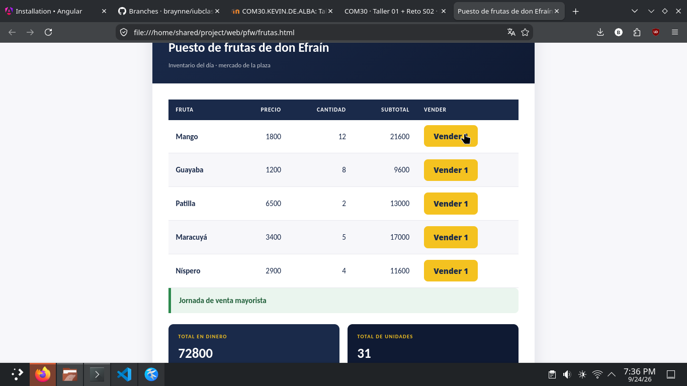
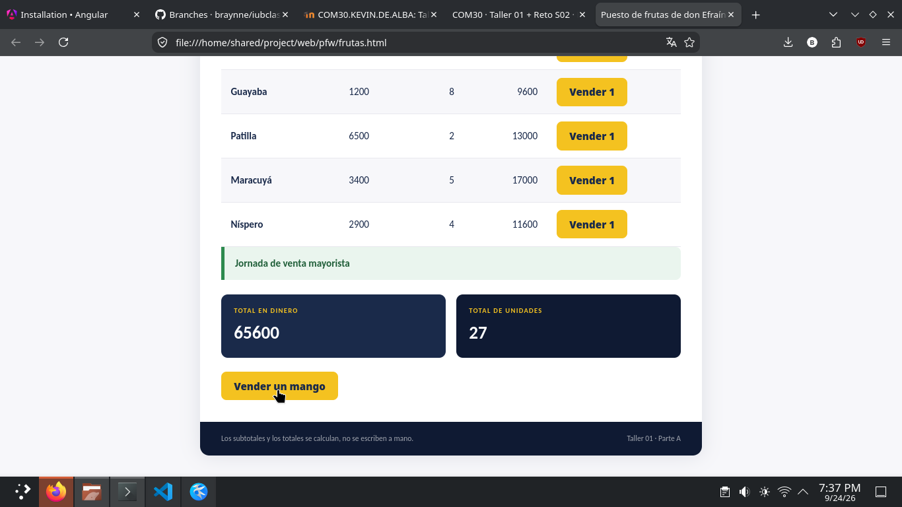
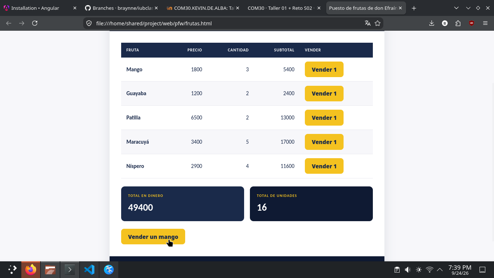
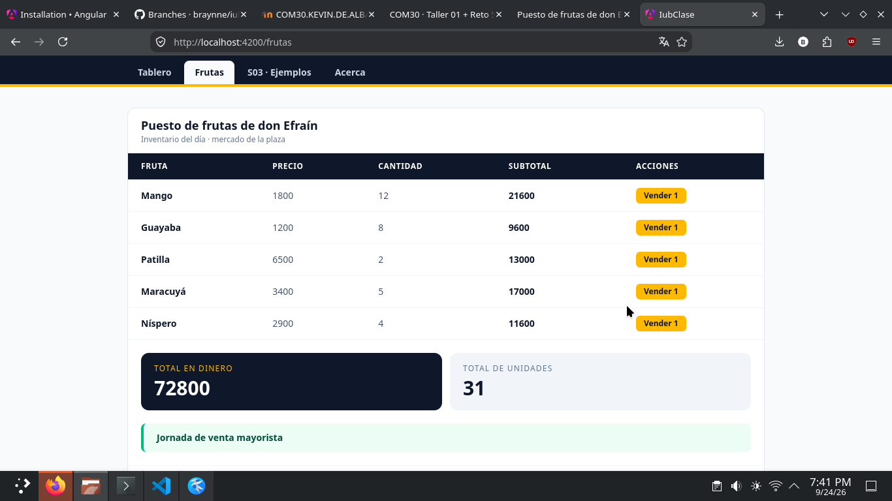
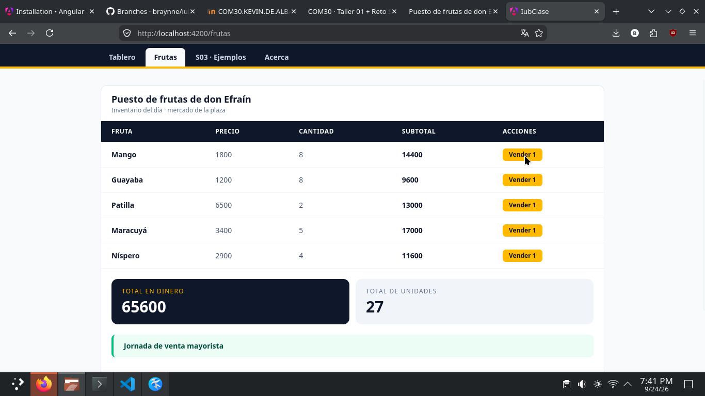
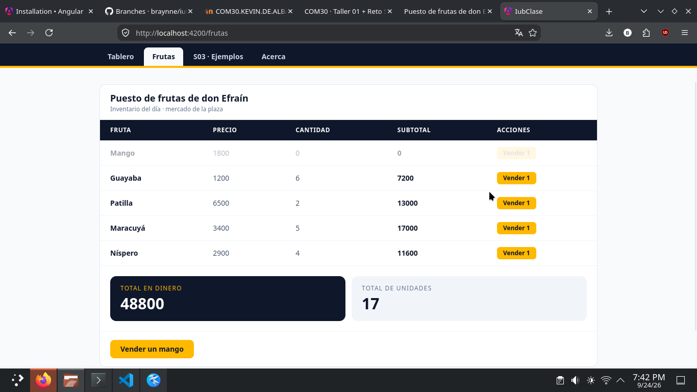
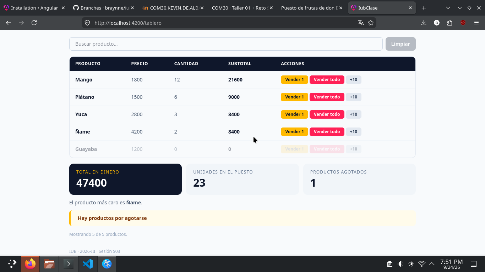

1 · La versión tradicional (Parte A) funcionando
frutas.html se abre con doble clic, sin servidor ni instalación: tabla con subtotales calculados, total en dinero, total de unidades, botón «Vender un mango» (y uno «Vender 1» por fila) y el mensaje del requisito 5.



2 · La versión Angular (Parte B) funcionando
Componente frutas (src/app/frutas/frutas.ts y frutas.html): el estado en una signal, los dos totales en computed, la tabla con @for + track, el mensaje con @if y un botón «Vender 1» en cada fila (además del «Vender un mango» del enunciado).

/frutas con los datos iniciales: 72.800 y 31.
/frutas después de 4 ventas: 65.600 y 27.
@if apagado solo: se vendió el mango y una maracuyá, el total es 47.800 (< $50.000) y la tarjeta verde ya no aparece.3 · Parte C · La comparación escrita
3.1 · Qué desapareció al pasar de la Parte A a la Parte B
Por lo menos cuatro cosas que escribí a mano en frutas.html y que en Angular no existen:
- La función
pintar()y sus llamadas. En la parte tradicional yo tenía una función que reconstruía la tabla y recalculaba todo a mano, y tenía que acordarme de invocarla después de cada cambio de dato. En Angular no existe: la plantilla es declarativa y vuelve a calcularse sola cuando los datos cambian. - Los
document.getElementById(...)y el armado de filas concreateElement/innerHTML. En la parte A buscaba cada casilla en el DOM, creaba cada<tr>y lo pegaba en eltbody. En Angular eso lo reemplaza el@forcon sutrack: solo escribo cómo se ve una fila y la plantilla las repite todas. - El
addEventListenerpara enganchar el botón. En la parte B es un enlace(click)="venderMango()"en la etiqueta misma; no hay código que registre el oyente ni que lo des-registre. - El manejo a mano del
style.displaydel mensaje. Cambiar el atributo `display` de un elemento cada vez que pintaba era responsabilidad mía. Lo reemplaza una línea de@ifque decide solo. - El estado como variable global del script. En la parte A el arreglo de frutas era una variable suelta; en la parte B vive en una
signal, que es la que se encarga de avisar a la pantalla cuando cambia.
3.2 · El requisito 5, lado a lado
Mostrar y ocultar el mensaje de «Jornada de venta mayorista»:
- Parte A: 5 líneas de JavaScript dentro de
pintar()(unifcon elstyle.displayde un lado y del otro), más la línea HTML del elemento y el CSS que lo inicializa oculto. Y lo más importante: esas líneas solo corren si yo me acordé de llamar apintar()tras cada venta. - Parte B: 1 línea: el
@if (totalDinero() > 50000)en la plantilla. Cuando el total baja del umbral, el bloque deja de renderizarse solo.
La diferencia enorme es dónde vive la decisión: en la parte A la decisión es un fragmento de código que ejecuto yo en el momento correcto; en la parte B es la descripción del resultado, y el framework se encarga de que la pantalla siempre coincida con ella.
Dato honesto que descubrí probando: vendiendo solo mangos el total más bajo alcanzable es $51.200 (72800 − 12 × 1800), que aún supera el umbral. Por eso la versión trae el botón «Vender 1» en cada fila (como el tablero de la clase): vendiendo además patilla o maracuyá se cruza el umbral y se puede ver el mensaje encenderse y apagarse desde la interfaz, sin tocar los datos.
3.3 · Por qué en la Parte B es imposible el bug de «cambié el dato y la pantalla no se actualizó»
En la parte A la pantalla y los datos eran dos mundos que yo tenía que mantener sincronizados a golpe de pintar(): si cambiaba el arreglo y me olvidaba de repintar, la consola mostraba el dato nuevo y la pantalla el viejo. Ese error literalmente no se puede escribir en la parte B porque la pantalla no se pinta por orden mía: la plantilla lee la signal (por ejemplo frutas() dentro del @for), y Angular registra esa lectura como una dependencia. Cuando venderMango() cambia el estado con .update(), la signal avisa exactamente a los computeds y a las partes de la plantilla que la estaban leyendo, y se vuelven a calcular. El «repintado» ocurre porque la pantalla estaba suscrita al dato, no porque un método se haya ejecutado en el momento correcto.
3.4 · Lo que me costó más
En mi caso lo que más me costó fue acostumbrarme a no mutar: cambiar el arreglo por dentro (cantidad--, push, sort directo) me salía natural y "funcionaba" a medias, pero no se reflejaba en pantalla ni era robusto. Fue más tiempo y vueltas para acostumbrarme a ese estilo que por la lógica del problema en sí: subtotal = precio por cantidad era la misma en las dos partes.
4 · Tabla de verificación de resultados
Taller 01 · el puesto de frutas
| Resultado esperado | Parte A | Parte B |
|---|---|---|
| Total en dinero al iniciar | 72.800 | 72.800 |
| Total de unidades al iniciar | 31 | 31 |
| Mensaje mayorista con 72.800 | Sí aparece | Sí aparece |
| Total tras 4 ventas de mango | 65.600 | 65.600 |
| Unidades tras 4 ventas de mango | 27 | 27 |
| Mensaje mayorista con 65.600 | Sigue apareciendo | Sigue apareciendo |
| Mensaje oculto bajo $50.000 | Sí, se oculta | Sí, se oculta |
Reto S02 · ampliación del tablero
| Dato esperado | Valor |
|---|---|
| Total en dinero | 47.400 |
| Unidades en el puesto | 23 |
| Productos agotados (Reto 1) | 1 |
| Aviso de inventario bajo (Reto 2) | Sí aparece |
| Producto más caro (Reto 3) | Ñame |
| Primera fila al ordenar (Reto 5) | Mango |
| Mensaje «Jornada de venta mayorista» | No aparece |
[...this.productos()].sort(...).

5 · El fork
Repositorio trabajado sobre un fork de github.com/kevindealbap10/iubclass: